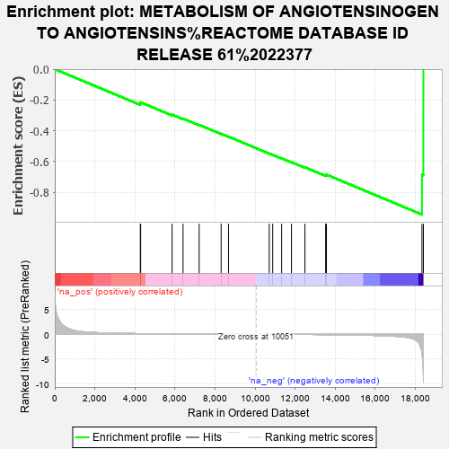

| | | Dataset | GSE41816_rank_genes |
| Phenotype | NoPhenotypeAvailable |
| Upregulated in class | na_neg |
| GeneSet | METABOLISM OF ANGIOTENSINOGEN TO ANGIOTENSINS%REACTOME DATABASE ID RELEASE 61%2022377 |
| Enrichment Score (ES) | -0.9445774 |
| Normalized Enrichment Score (NES) | -1.9187896 |
| Nominal p-value | 0.0 |
| FDR q-value | 0.024574058 |
| FWER p-Value | 0.052 |
Table: GSEA Results Summary

Fig 1: Enrichment plot: METABOLISM OF ANGIOTENSINOGEN TO ANGIOTENSINS%REACTOME DATABASE ID RELEASE 61%2022377
Profile of the Running ES Score & Positions of GeneSet Members on the Rank Ordered List
| PROBE | GENE SYMBOL | GENE_TITLE | RANK IN GENE LIST | RANK METRIC SCORE | RUNNING ES | CORE ENRICHMENT | | 1 | CTSZ | | | 4269 | 0.124 | -0.2235 | No |
| 2 | REN | | | 4286 | 0.123 | -0.2156 | No |
| 3 | CTSG | | | 5856 | 0.071 | -0.2960 | No |
| 4 | CPB2 | | | 6401 | 0.058 | -0.3215 | No |
| 5 | CTSD | | | 7205 | 0.043 | -0.3621 | No |
| 6 | AGT | | | 8303 | 0.025 | -0.4200 | No |
| 7 | ENPEP | | | 8671 | 0.019 | -0.4386 | No |
| 8 | ATP6AP2 | | | 10704 | -0.010 | -0.5484 | No |
| 9 | ACE2 | | | 10876 | -0.012 | -0.5569 | No |
| 10 | CPA3 | | | 11323 | -0.020 | -0.5797 | No |
| 11 | CMA1 | | | 11813 | -0.029 | -0.6043 | No |
| 12 | CPB1 | | | 12484 | -0.044 | -0.6376 | No |
| 13 | GZMH | | | 13518 | -0.074 | -0.6885 | Yes |
| 14 | ACE | | | 13559 | -0.076 | -0.6853 | Yes |
| 15 | MME | | | 18326 | -3.662 | -0.6848 | Yes |
| 16 | ANPEP | | | 18397 | -9.709 | -0.0000 | Yes |
Table: GSEA details [plain text format]
Fig 2: METABOLISM OF ANGIOTENSINOGEN TO ANGIOTENSINS%REACTOME DATABASE ID RELEASE 61%2022377: Random ES distribution
Gene set null distribution of ES for METABOLISM OF ANGIOTENSINOGEN TO ANGIOTENSINS%REACTOME DATABASE ID RELEASE 61%2022377